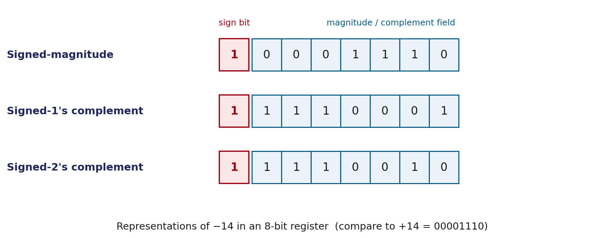

Think about how you write a negative number on paper: you just put a minus sign in front of it, like −14. Easy. Now imagine you're a computer, and you only have two symbols in your entire universe: 0 and 1. There's no minus-sign key. So how do you tell the difference between +14 and −14 using nothing but 0s and 1s? That's the whole problem this page solves — and it turns out there are three different ways to solve it, with one clear winner.
Every value stored in a computer's memory is just a row of 0s and 1s — nothing else. If we want to store negative numbers too, we need to agree on a rule for how a 0/1 pattern can mean "this is negative." The simplest possible fix — and the one every computer actually uses — is:
So in an 8-bit number, you're really only left with 7 bits to store the actual value, and the 8th bit just answers the yes/no question "is this negative?"
You already know that numbers can have a decimal point (like 3.14). Binary numbers can have a "binary point" the same way. The name fixed-point means: everyone agrees in advance exactly where that point goes, and it never moves. Two simple choices are possible:
This page uses the second choice, since that's what you'll use almost everywhere in this course. One more important detail: the point itself is never actually stored as a bit — it's just an agreement everyone remembers, like knowing that "Rs." in front of a number means rupees without writing it every time.
Once we've set aside the first bit as the sign, we still need to decide how to write the rest of the number when it's negative. There are three competing methods. All three agree completely on positive numbers — they only disagree once a number goes negative.

| Number | Positive version | Signed-magnitude | 1's complement | 2's complement |
|---|---|---|---|---|
| −20 | 00010100 | 10010100 | 11101011 | 11101100 |
| −50 | 00110010 | 10110010 | 11001101 | 11001110 |
| −100 | 01100100 | 11100100 | 10011011 | 10011100 |
Steps for −20: 1) write +20 as 00010100 2) signed-mag: flip only the sign bit → 10010100 3) 1's comp: flip every bit → 11101011 4) 2's comp: add 1 to that → 11101100
Signed-magnitude addition mirrors how you'd add by hand: if the signs match, add the magnitudes and keep that sign; if they don't match, subtract the smaller magnitude from the larger and keep the sign of the bigger number. That means the hardware needs a comparator and a subtractor, on top of an adder.
2's-complement addition needs none of that. Add the two numbers — sign bits included — exactly like normal addition, and if a carry pops out of the leftmost position, just throw it away. One simple rule, one piece of hardware. This is the entire reason 2's complement is used in every real computer you've ever touched.
| What we're adding | In 8-bit binary | Result | Matches normal math? |
|---|---|---|---|
| (+6) + (+13) | 00000110 + 00001101 | 00010011 | = +19 ✓ |
| (−6) + (+13) | 11111010 + 00001101 | 00000111 | = +7 ✓ |
| (+6) + (−13) | 00000110 + 11110011 | 11111001 | = −7 ✓ |
| (−6) + (−13) | 11111010 + 11110011 | 11101101 (carry dropped) | = −19 ✓ |
+30 = 00011110 −12 = 11110100 -------------------- sum = 100010010 ← 9 bits! drop the leading carry keep = 00010010 = +18
Check: 30 − 12 = 18. It matches, using nothing but plain addition.
An 8-bit signed register can only hold numbers from −128 to +127. If the true answer falls outside that range, it's called overflow.
+70 = 01000110 +80 = 01010000 -------------------- sum = 10010110 ← this LOOKS negative, but we added two positives!
That mismatch — a negative-looking result from two positive numbers — signals overflow. 150 doesn't fit in 8 signed bits (max is +127).
x - y in code.| Representation | How to get it | Used for addition? |
|---|---|---|
| Signed-magnitude | Flip only the sign bit | No — needs comparator + subtractor |
| 1's complement | Flip every bit | Rarely, on its own |
| 2's complement | Flip every bit, then add 1 | Yes — universal in real CPUs |